The Handoff is a project showcasing the process of translating a web design created in Figma into a fully functional website. In this project, a Web Designer crafts the design in Figma, and I take on the role of the Web Developer to build the website from scratch.
What does this demonstrate about my skills?
- Proficiency in understanding and working with Figma.
- The ability to code websites from the ground up using HTML and CSS.
- A solid grasp of effective collaboration between a Web Designer and a Web Developer.
- The ability to create a responsive and flexible layout that adapts to different screen sizes.
- A detail-oriented approach to creating a pixel-perfect implementation of an original Figma design.
When transitioning a Figma design into a "mobile-first" web project, clarity and preparation are key. While responsive and flexible layouts are the ultimate goals, understanding the design's intent and its nuances sets the foundation for success. Here's how I approach this task systematically, starting with sketching and notations to uncover hidden design details.
- Step 1: Break Down the Overall Structure
- Analyze the layout hierarchy: Identify headings, sections, overlays, and navigational elements.
- Sketch a rough wireframe: Visualize key structural elements for both mobile and desktop views.
- Step 2: Analyze Mobile-to-Desktop Differences
- Review Figma layers for mobile-specific details like text wrapping, alignment, and stacking order.
- Note flexbox or grid adjustments needed for desktop (e.g., row-to-column transformations).
- Step 3: Extract Design Variables
- Collect all fonts, colors, gradients, and text sizes.
- Organize these into a CSS variables for consistency.
- Step 4: Fine-Tune Spacing and Alignment
- Note margins, padding, and element spacing.
- Include notes on text box width, alignment, and responsive spacing rules.
- Step 5: Prepare Media Assets
- Export images, icons, and logos with appropriate naming conventions and formats.
Breaking down the overall structure of the website:
Header Section
- Logo (top left)
- Navigation (top right)
- Background image with gradient (top to bottom)
- Text (h1)
- Emmet: header>nav>a+ul>li*3^div>h1
Main Section
- Title Area: text (h2), location (h1), icon, hours (h2)
- Sections: Three images, sub-title (h2, left justified) and text (p, left justified). First and Third text box to the right, the second is to the left
- Separator: an icon
- Menu Images: With a gradient (bottom to top) and text (h2)
- Emmet: main>div.title>div#title-text1>h2^h1+img[src]+div#title-text2>h2^^div.container>section>img[src]+div.section-text>h2+p^^section>img[src]+div.section-text>h2+p^^section>img[src]+div.section-text>h2+p^img[src]^^div.menu-img>div.menu-item.drink-menu>h2.menu-text^div.menu-item.food-menu>h2.menu-text
Footer Section
- Contact (h2): address, phone, email
- Social media icons/links
- Copyright text
- Emmet: footer>div.footer-content>div.contact-info>h2.address+h2.phone+h2.email^div.social-icons>a.icon-placeholder.facebook[title="Like us on Facebook" href="https://facebook.com"]+a.icon-placeholder.twitter[title="Follow us on X" href="https://x.com"]+a.icon-placeholder.instagram[title="Follow us on Instagram" href="https://instagram.com"]^p.copyright
For the next step, notating the key differences between Mobile and Desktop views.
Border
- Desktop: Sets the page with a color, then sets a page frame for everything to go on top of.
- Mobile: Uses the entire page edge-to-edge.
Navigation
- Desktop: Uses a horizontal navigation bar with left and right alignment.
- Mobile: Uses a vertical navigation bar.
Sections
- Desktop: Uses a horizontal layout that alternates between left and right alignment of the images-to-text.
- Mobile: Uses a vertical layout that is always image on top of text.
Footer
- Desktop: Uses a horizontal layout with phone listed first, then address.
- Mobile: Uses a vertical layout with address listed first, then phone.
Various Elements
- Spacing
- Image and text sizing
- Alignment
- Text wrapping
This particular project did not provide a developer-centric Figma file, so there is no design system, no tokens, nor an asset library. Also, the free version of Figma was used with no plugins, so there was not a Dev Mode available or tools like Zeplin. Using manual visual inspection and exports, I derived all the variables into the CSS file for use.
All the element spacing, margins, padding, and text boxes were noted. For the responsive media queries, which were not defined, I took the liberty of setting the following:
- Default Mobile First Design (Based on a 360x800 device)
- 992px
- 1284px
- 1920px
Since the Figma file only contained a "Mobile" and "Desktop" design, I initially started out with the default (360px) and 1920px. However, after doing responsive testing, I added 992px and 1284px to the media queries to cover tablets as well.
For media assets, I exported as follows:
- Images: 2x jpg, low quality to keep the size reasonable.
- Icons/Logos: SVG
With all the "pre-work" done, it was time to start coding and inserting the content. In general, this design was not complicated and it did not involve the need for any JavaScript. Regardless, it was my very first web site I built from scratch. It's not perfect, but I let it stand as is to show the evolution of my coding capabilities.
GitHub Repo: https://github.com/dustybusby/The-Handoff-Project
Web Site: https://dustybusby.github.io/The-Handoff-Project/
 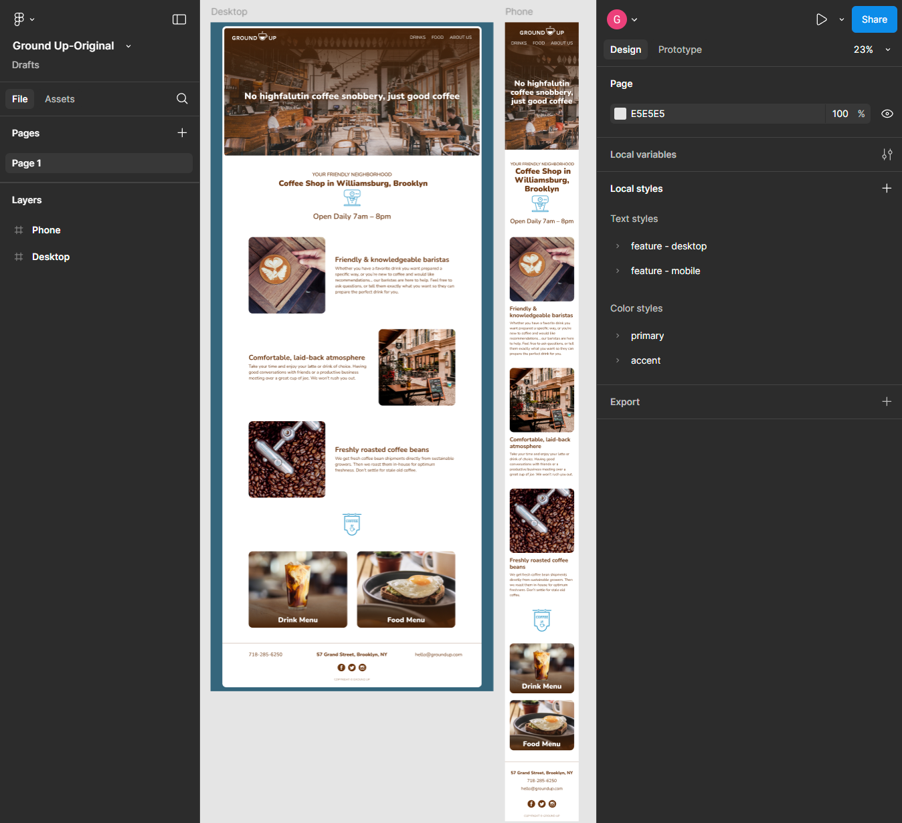
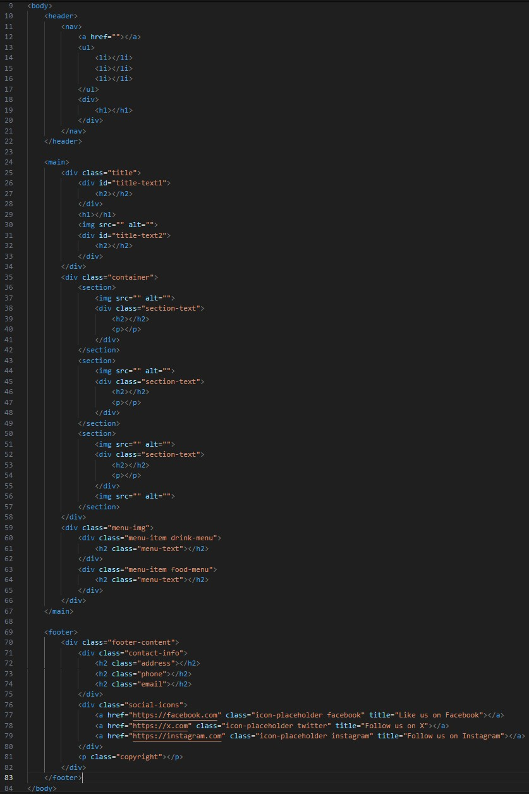
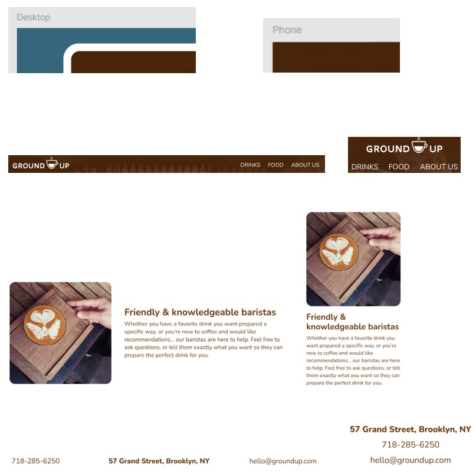
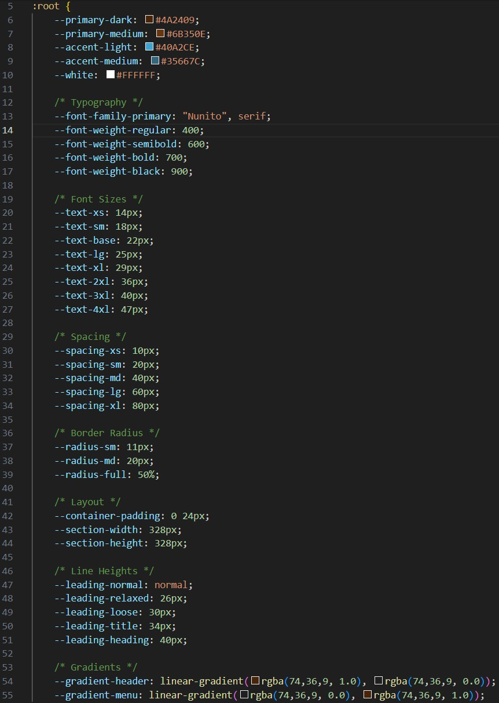
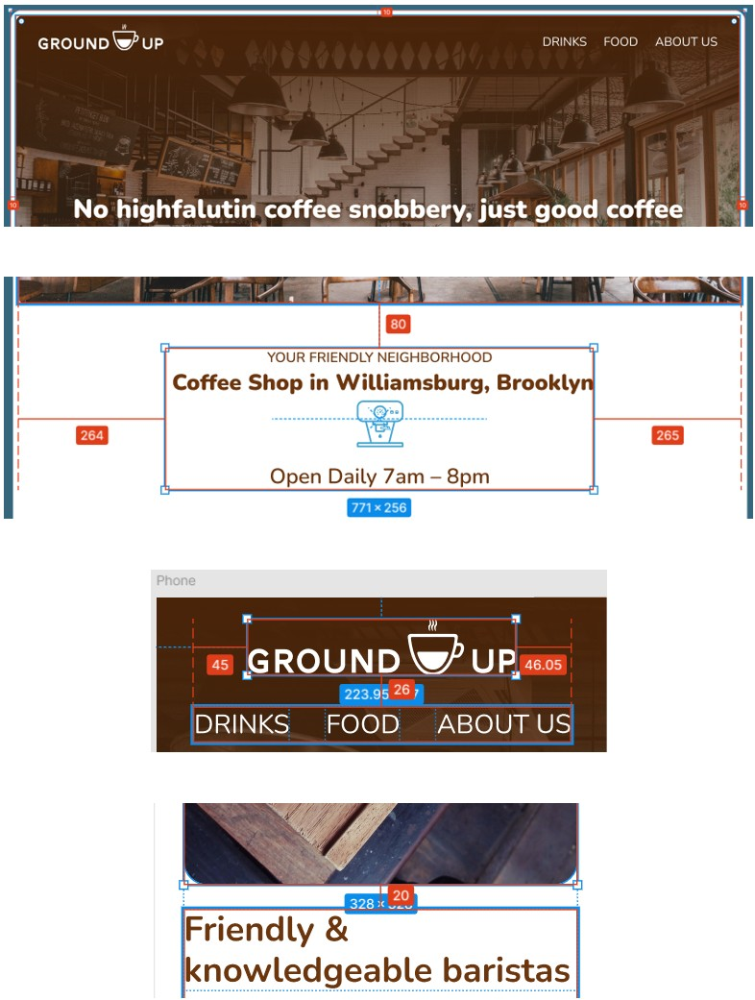
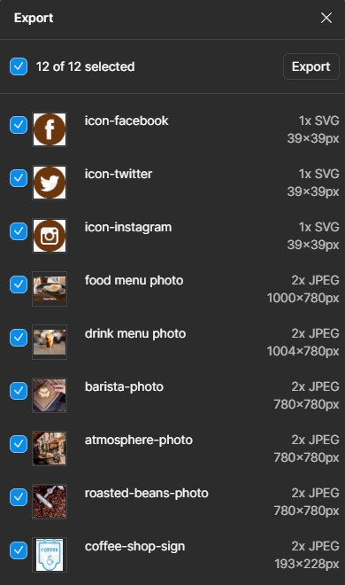
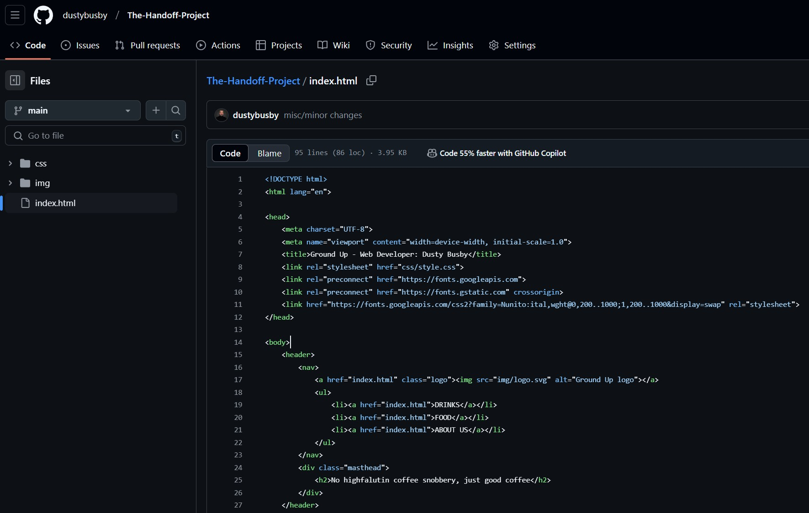
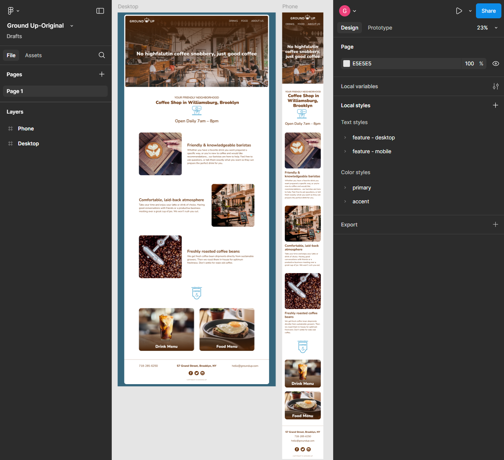
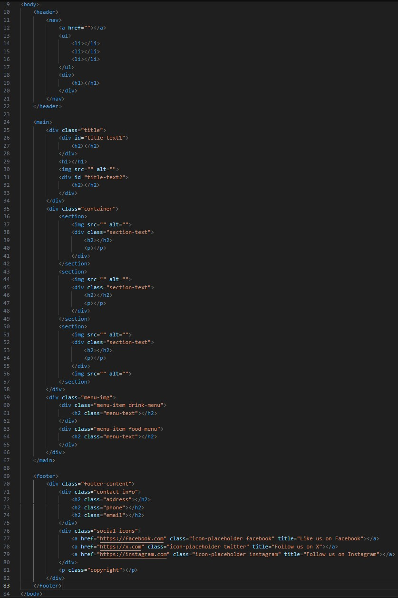
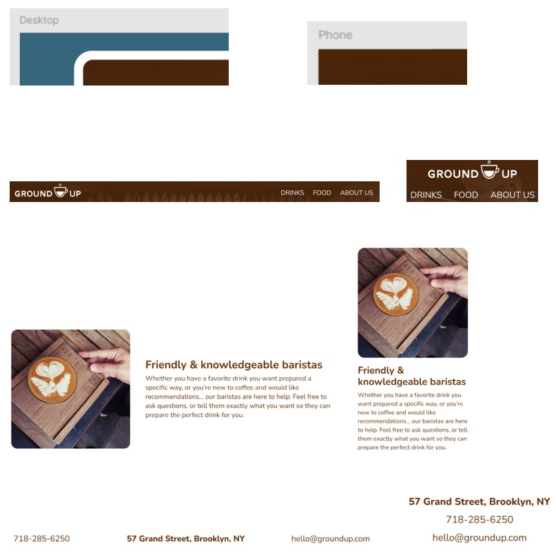
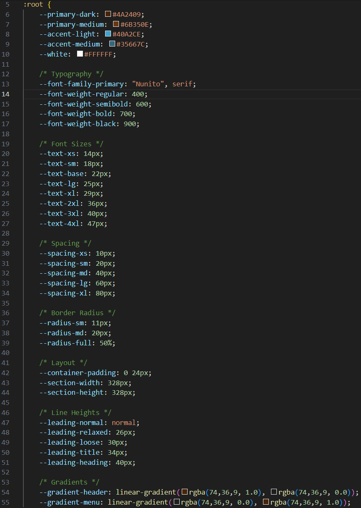
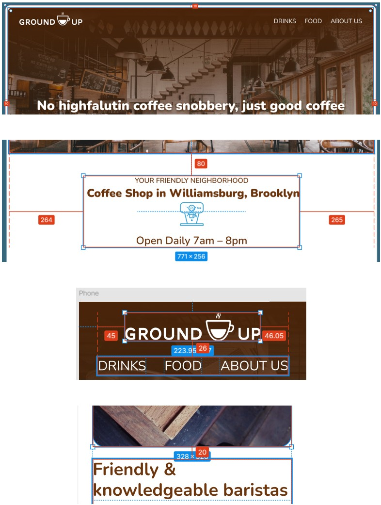
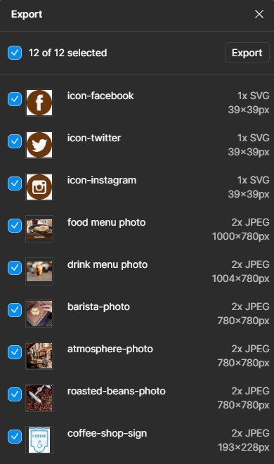
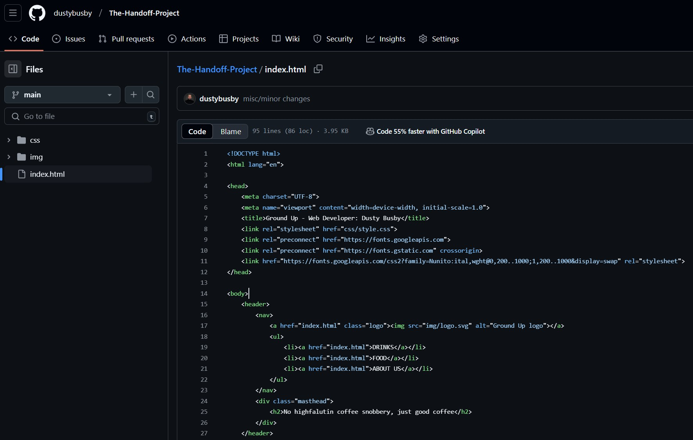